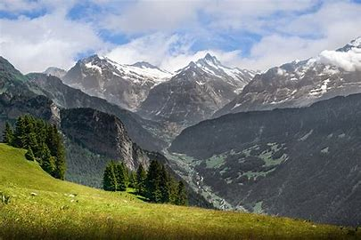
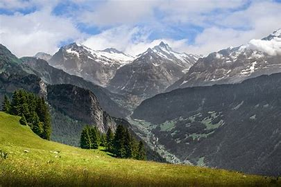
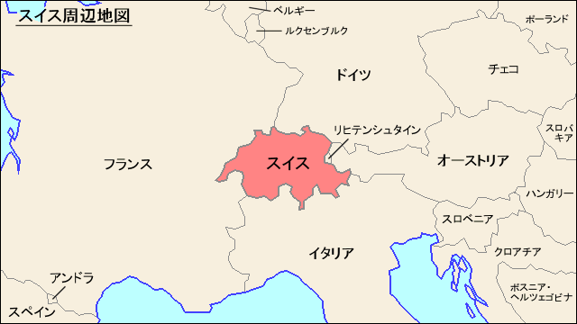
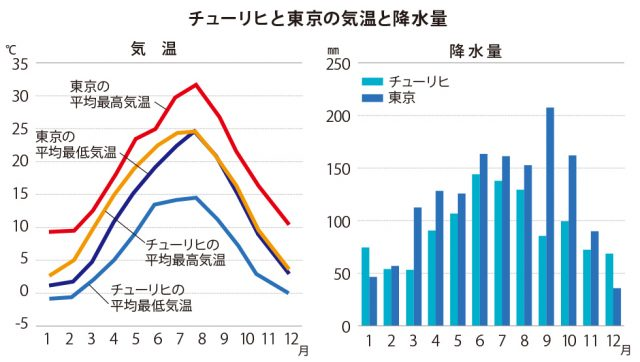
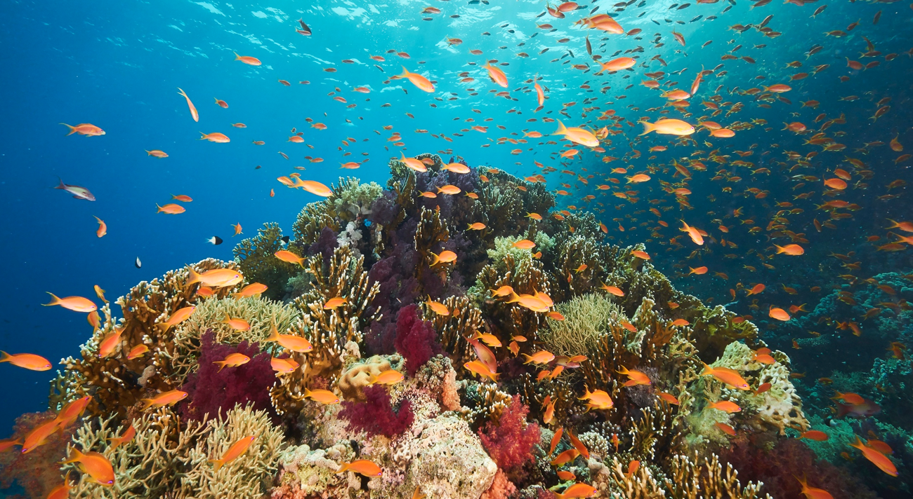
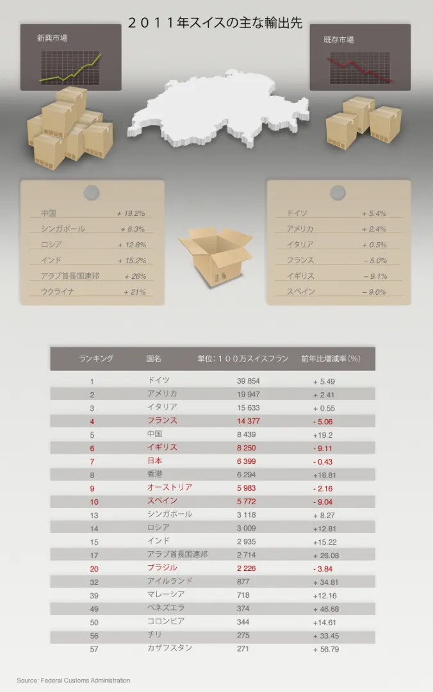
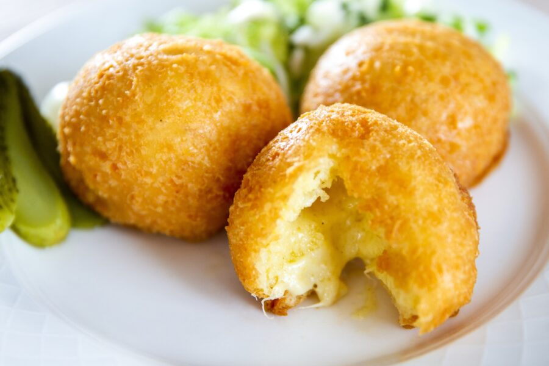
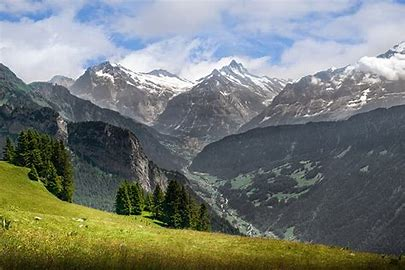

スイスは ヨーロッパ 中央部に位置する内陸国である。 面積は41,290km²で、うち96%の39,770km²が陸地である。 周辺には東に オーストリア と リヒテンシュタイン 、南に イタリア 、西に フランス 、北に ドイツ と接する。
スイスは起伏に富んだ地形なので、地域や標高により気候はかなり異なる。一般に北部の平地は比較的穏やかで、湖畔エリアも過ごしやすい。南部地域は地中海の影響でかなり温暖である。
スイスのチューリヒは東京と比べて最高気温も最低気温もかなり低く、降水量も少ない。
自然資本とエコシステム機能は、多くの国で国富に大きく貢献しています。 スイス・リーの最近の生物多様性およびエコシステム・サービス・インデックスによれば、世界のGDPの55%が手つかずのエコシステムに依存しています。 サンゴ礁は、世界全体で、観光業による年間360億ドルの経済価値を提供しており、このうち190億ドルが、ダイビング、野生生物の観察などの「サンゴ礁に直結した」観光業により生み出され、 残りはサンゴ礁関連分野での観光業、例えば、海の眺望、ビーチ、現地の海産物などから生み出されています。日本の観光支出のうち約13%はサンゴ礁での活動に関連しており、 その額は年間約10億米ドル相当と推計されています。 自然資本とエコシステム機能は、多くの国で国富に大きく貢献しています。 スイス・リーの最近の生物多様性およびエコシステム・サービス・インデックスによれば、世界のGDPの55%が手つかずのエコシステムに依存しています。 
スイスの最も重要な貿易相手国はドイツで、輸出品の約18％を占めている。スイスの最も重要な輸出品は、化学・製薬産業（52％）、機械（13％）、時計（8％）、および精密機器（7％）の製品である。 輸入品の約3分の2（2020年には1,820億スイスフラン）は、EU諸国からのものである。ドイツだけで輸入品の27％以上を占めている。輸入品の大半を占めるのは、化学・製薬産業、 並びに機械、電子機器、自動車である。 
スイスにはたくさんの独自の食べ物があります。 そもうちの一つであるマラコフは、スイスのヴォー州で生まれた伝統的なチーズ料理です。食パンにグリュイエールチーズを乗せて揚げた、サクサクとした食感と溶けたチーズの濃厚な味わいが特徴的なおつまみです。作り方は、グリュイエールチーズに小麦粉、卵、ニンニク、スパイス、白ワインを混ぜた生地を丸く抜いた食パンの上にドーム型に盛り、180℃の油で両面をきつね色になるまで揚げます。マラコフは、ビールやワインとの相性が良く、パーティーやフィンガーフードとしても人気があります。 
「グレイシャー（氷河）イニシアチブ」は、アルプス山脈が生み出す独特な生態系が温暖化によって破壊されることを防ぐため、不要な貨物輸送を減らすとともに、2050年までに貨物輸送の100％を電気燃料に切り替えることを目指している。
